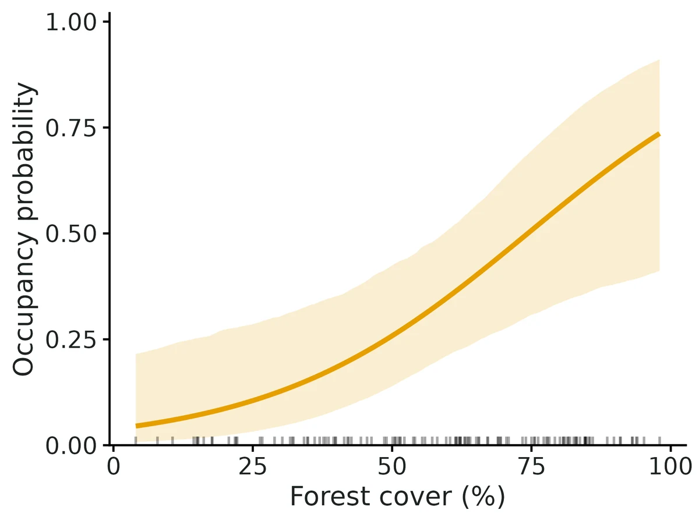
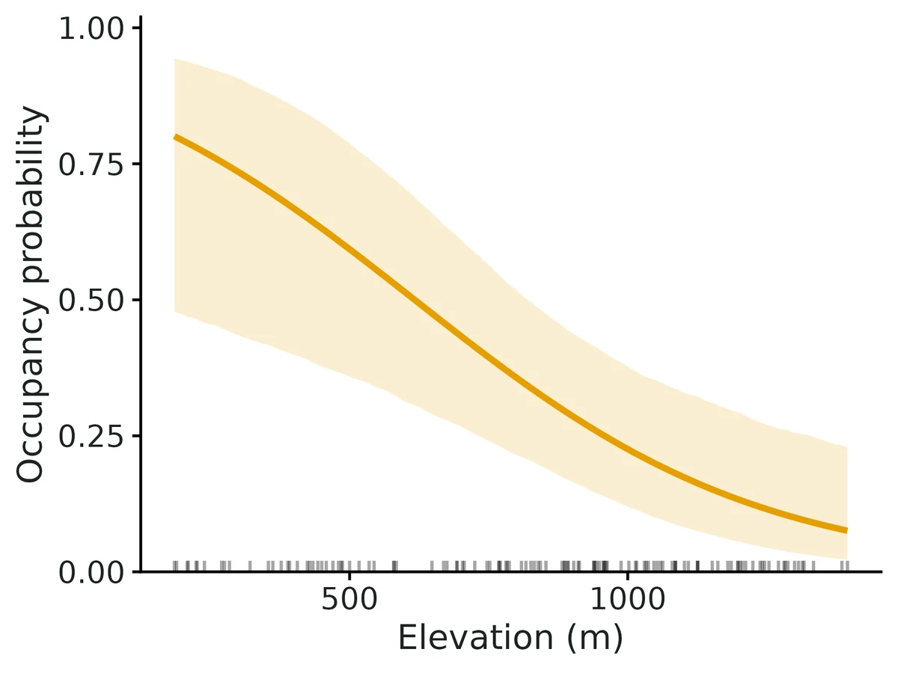
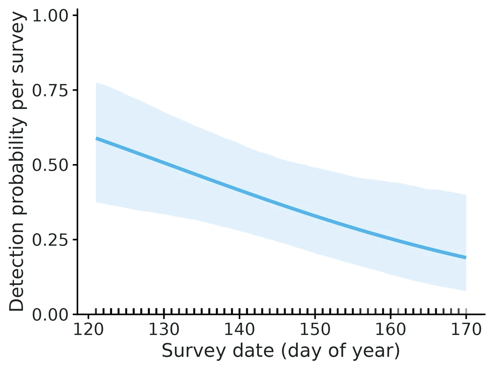
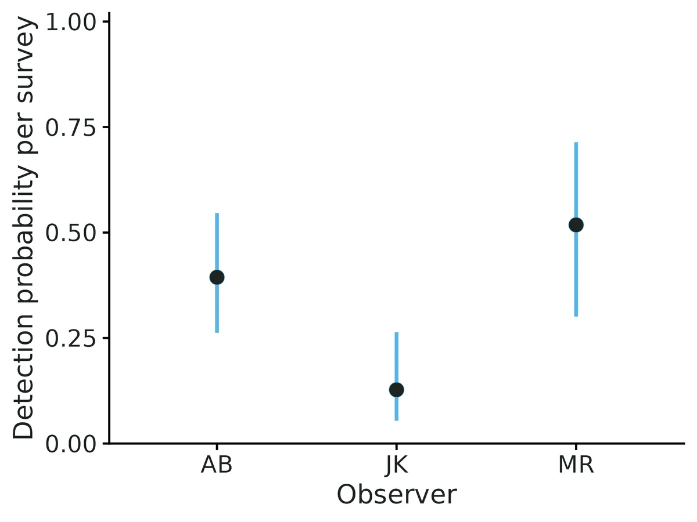

Single-species occupancy (static single-season and dynamic multi-season)
Where does the species occur, and which habitat or survey conditions are associated with occurrence and with detecting it? A species can be present at a site but missed on every visit; the naive "proportion of sites where it was seen" is then biased low, and covariates that affect detection can look like habitat effects. Repeat surveys let the model separate the two.
Is this the right analysis?
Use it when
Detection/non-detection surveys repeated at sites (camera traps, call surveys, eDNA replicates, point counts reduced to 0/1); question is where a species occurs and what is associated with occurrence, detection, colonisation or local extinction, accounting for imperfect detection. Static = one season; dynamic = several seasons/years at the same sites.
Not for
Counts or abundance (use an N-mixture module), several interacting species (occu-rota / occu-waddle), spatially autocorrelated occupancy (spOccupancy), false-positive detections, a single survey per site (detection cannot be separated from occupancy), designs with very low detection and few surveys (see Known limits in VALIDATION.md).
The data you need
Detection history (long table site[, season], survey, detected 0/1; or wide site x survey), site covariates, optional survey covariates and site-by-season covariates.
What the example's main data file looks like:
| site | survey | date | julian_day | observer | detected |
|---|---|---|---|---|---|
| STAND-001 | 1 | 2025-05-07 | 127 | MR | 1 |
| STAND-001 | 2 | 2025-05-18 | 138 | AB | 1 |
| STAND-002 | 1 | 2025-05-08 | 128 | AB | 1 |
| STAND-002 | 2 | 2025-05-19 | 139 | MR | 0 |
| STAND-003 | 1 | 2025-05-11 | 131 | JK | 0 |
Not sure? Use the finder to compare modules.
The worked example
Pileated woodpecker occupancy and forest cover (simulated call-playback surveys, 120 stands)
A forest ecologist wants to know where pileated woodpeckers (Dryocopus pileatus) occur in a managed forest. In May and June 2025 her crew visited 120 forest stands. At each visit an observer played a recorded call and listened for a reply. A stand got up to 4 visits, about 12 days apart. Some stands got only 2 or 3 visits because of weather and road closures. Three observers (AB, JK, MR) did the surveys. Woodpeckers call less as the season goes on, and observers differ in how well they hear replies. So a stand with no detections may still have had woodpeckers.
The question: Is pileated woodpecker occupancy of forest stands associated with forest cover and elevation, allowing for birds that were present but missed (detection varying with survey date and observer)?
The data are simulated, so the true answer is known and the analysis can be checked against it.
What the researcher typed
I have pileated woodpecker call-playback surveys from 120 forest stands, up to 4 visits each in May-June 2025. The files are detections.csv (one row per visit: stand, visit number, date, day of year, observer, detected 1/0) and sites.csv (forest cover %, elevation in m, stand age). Does forest cover or elevation affect whether woodpeckers occupy a stand? Please account for birds we missed, and allow detection to change with date and observer. I need results and figures for a paper.
Run it yourself
Download the example data below and unzip it.
Open the unzipped folder in Claude Code (see Install).
Paste the prompt above. The agent checks the files, writes a plan, runs planted truth, fits the model and writes the report. You can compare your results with the ones below.
Contains detections.csv, sites.csv, the settings file (config.yaml), a description of the data and a step-by-step walkthrough.
Study design details
| model | static |
|---|---|
| n sites | 120 |
| max surveys | 4 |
| surveys done | 405 |
| prop missing | 0.156 |
| visits per site | 4: 72; 3: 21; 2: 27 |
| n observers | 3 |
| n detections | 52 |
| n sites detected | 34 |
| engine | unmarked (maximum likelihood) |
Results from the example data

In plain language
- The species was detected at least once at 34 of 120 sites (naive occupancy 0.28). Allowing for missed detections, the estimated probability that a site with average covariate values is occupied is 0.33 (95% CI 0.20 to 0.49).
- Of the 120 surveyed sites, an estimated 47 (95% CI 37 to 58) were actually occupied (proportion 0.39 (95% CI 0.31 to 0.48)); this finite-sample estimate applies to these sites only, not to the wider landscape.
- With the typical 4 surveys per site, an occupied site is detected at least once with probability 0.87 (95% CI 0.70 to 0.96), so about 13% of occupied sites go undetected with this survey effort.
- Going from the 10th to the 90th percentile of forest cover (22 to 85.3%), occupancy changes from 0.09 (95% CI 0.03 to 0.28) to 0.62 (95% CI 0.36 to 0.81); each 10-unit increase multiplies the odds by 1.54.
- Going from the 10th to the 90th percentile of elevation (361 to 1250 m), occupancy changes from 0.69 (95% CI 0.41 to 0.88) to 0.12 (95% CI 0.04 to 0.27).
- Detection per survey by observer: AB 0.39 (95% CI 0.26 to 0.55); JK 0.13 (95% CI 0.05 to 0.26); MR 0.52 (95% CI 0.30 to 0.71).
- These are associations from an observational design; they do not by themselves show that a covariate causes the change.
- Goodness of fit (MacKenzie-Bailey test, 500 bootstrap replicates): c-hat = 1.31, p = 0.138. No evidence of lack of fit; this test has low power against unmodelled differences in detection among sites.
More figures



Figures are the module's default publication figures, reduced for the web. The report also saves them as PDF and full-resolution PNG.
Planted truth at the example's design
Before trusting the example's results, the module was run on many simulated data sets with the same design and known true values. Each row is one quantity: did the method get it back? (What the thresholds are.)
Every quantity checked passed planted truth at this design.
| This example | 120 forest stands, up to 4 surveys each (405 surveys) |
|---|---|
| Design the module was validated at | 200 sites, 4 surveys each, occupancy 0.5, detection 0.4 |
The example has fewer sites than the validated default (120 vs 200). VALIDATION.md found that at 100 sites the occupancy slope is inflated (+11.5%, failing the 10% rule), and at the example's 120 stands the forest effect was +6.0% and +9.6% too strong in two recovery runs, just inside the limit. Detection and occupancy probabilities were recovered well; the size of occupancy slopes may be a little high.
These calls sit close to the pass/fail line. With another 200 simulated data sets they could come out the other way, so read them as “about at the limit” rather than as a clear pass or fail.
- psi_beta_forest_cover_pct (✓ PASS): bias +9.6% against an allowance of ±10.0% (set by the 10% rule), so it used 96% of the allowance.
13 of 13 rows pass; 1 is borderline.
| Quantity | Check | True value | Average estimate | Bias | Allowed bias | Coverage (needed) | Result |
|---|---|---|---|---|---|---|---|
| detection_prob | standard check | 0.402 | 0.407 | +1.3% | ±10.0% | 0.95 (0.904) | ✓ PASS |
| occupancy_prob | standard check | 0.406 | 0.402 | -0.9% | ±10.0% | 0.94 (0.904) | ✓ PASS |
| p_beta_effort | standard check | -0.532 | -0.546 | -2.7% | ±10.0% | 0.96 (0.904) | ✓ PASS |
| prop_sites_occupied | standard check | 0.42 | 0.422 | +0.4% | ±10.0% | 0.95 (0.904) | ✓ PASS |
| psi_beta_forest | standard check | 1.05 | 1.11 | +6.0% | ±10.0% | 0.96 (0.904) | ✓ PASS |
| detection_prob | full example model | 0.397 | 0.393 | -0.8% | ±10.0% | 0.96 (0.904) | ✓ PASS |
| occupancy_prob | full example model | 0.398 | 0.406 | +1.8% | ±10.0% | 0.96 (0.904) | ✓ PASS |
| p_beta_julian_day | full example model | -0.532 | -0.548 | -2.9% | ±10.0% | 0.97 (0.904) | ✓ PASS |
| p_beta_observerJK | full example model | -0.6 | -0.635 | -5.8% | ±15.3%† | 0.94 (0.904) | ✓ PASS |
| p_beta_observerMR | full example model | 0.4 | 0.428 | +6.9% | ±22.4%† | 0.98 (0.904) | ✓ PASS |
| prop_sites_occupied | full example model | 0.421 | 0.433 | +2.8% | ±10.0% | 0.97 (0.904) | ✓ PASS |
| psi_beta_elevation_m | full example model | -0.513 | -0.544 | -6.0% | ±13.4%† | 0.97 (0.904) | ✓ PASS |
| psi_beta_forest_cover_pct | full example model | 1.02 | 1.11 | +9.6% | ±10.0% | 0.96 (0.904) | ✓ PASS ≈ borderline |
Limits that matter
- Small samples inflate occupancy slopes: at 120 stands the forest effect was +6.0% (Run A) and +9.6% (Run B) too strong on average, just inside the 10% gate (100 sites fails at +11.5%). Trust the direction; treat the size as possibly a little high.
- Low power for the secondary effects at this design: an elevation effect of the simulated size was detected in 43% of replicates, observer differences in 16-32%.
- Unmodelled detection heterogeneity among sites biases occupancy low (about -23% at logit SD 1.5) and the MacKenzie-Bailey test flags it only about 1 time in 10.
- Few surveys with low detection fail (2 surveys, p = 0.2); not the case here (cumulative detection 0.87 over 4 visits), though 27 stands had only 2 visits.
- The module simulator has one occupancy and one detection covariate, so the standard recovery (Run A) omits elevation and observer; Run B covers the full example model.
- No false positives, no spatial autocorrelation, closure assumed within the May-June season.
All known limits from the module's validation record
- Small samples inflate occupancy slopes. At 100 sites (static), ML
psi_beta_forestis +11.5% and the Nimble posterior mean +16.1% (gate fails on bias; coverage stays nominal). At 50 sites, +23%. Treat slope magnitudes from < 150 sites as upper-biased; direction and intervals remain usable. A penalised-likelihood estimator (unmarkedoccuPEN, Hutchinson et al. 2015) is not implemented. - Few surveys with low detection fail. With 2 surveys and p = 0.2 (cumulative detection 0.36), occupancy is biased +10%, the occupancy slope +49% (dynamic: extinction slope +21%), intervals are very wide, and 4% of fits hit a boundary. The interpretation warns when cumulative detection < 0.5 or p < 0.2. Recommend >= 3 surveys or p* >= 0.5 (consistent with Guillera-Arroita et al. 2010; MacKenzie et al. 2002 found estimates roughly unbiased for p above about 0.3).
- Unmodelled detection heterogeneity biases occupancy low (-23% at logit SD 1.5), and the MacKenzie-Bailey test has low power to flag it (rejects about 10% of the time; mean c-hat 1.09-1.13; section 5). A non-significant GOF test is not evidence of no bias. The module has no random-effect or Royle-Nichols alternative; model detection covariates (observer, effort, date, local abundance proxies) explicitly.
- The Nimble posterior-predictive "c-hat" (mean observed / mean replicated discrepancy) is not the same quantity as the bootstrap c-hat, so don't use it to inflate SEs. Use the PPC p-value.
- Core gate caveat (found here, not fixed):
summarise_recovery()setsn_okto the number of converged replicates, so the gate's convergence ration_converged / (n_ok + n_failed)is 1 unless replicates error out. Non-converged (boundary) replicates are only visible in the reps file. True convergence rates were computed from the reps files and are quoted above (hard designs 192/200 and 193/200). - No false-positive detections, no spatial autocorrelation, no multi-species, no within-season staggered entry.
poly()must not be used in formulas (useI(x^2)). - Finite-sample proportions from unmarked use the asymptotic normal of the MLE for parameter uncertainty. Coverage was 0.97 at the default and 0.91 in the hard design.
How this module was validated
- 200 simulated data sets with unmarked (100 with Nimble, 3 chains x 4000 iterations) at static and dynamic default designs; all quantities passed except one borderline Nimble coverage (0.890 vs 0.904) in the dynamic model.
- Smaller and harder designs tested: 100 sites failed on the occupancy slope (+11.5%); 2 surveys with detection 0.2 failed badly (occupancy slope +48.5%).
- Negative controls: ignoring detection biased occupancy -18.8% (coverage 0.30) and unmodelled detection differences among sites biased it -22.7%; both failed the gate. With no true effects, false-positive rates were 0.03-0.075.
- Cross-checks: unmarked's likelihood matched a hand-written forward algorithm to all printed digits; the goodness-of-fit statistic matched AICcmodavg; unmarked and Nimble agreed within 0.1 standard errors at 1000 sites.
- Power: a slope of 1 on occupancy is detected with 80% power at about 70-100 sites, but slopes are inflated below about 150 sites (+23% at 50 sites).
- The goodness-of-fit test was calibrated (size 0.035-0.06) but flagged unmodelled detection heterogeneity only about 10% of the time.
- A separate verifier with its own simulator passed independent static (150 sites) and dynamic (120 sites) designs on both engines, reproduced the builder's runs, and fixed silent handling of text detections and season ordering.
Every run uses the acceptance gate described on the validation page. The full record follows, section by section, exactly as kept in the module's VALIDATION.md.
Settings and pass/fail rule used for every run
All runs: bin/Rscript core/run.R recover occu-single --config dev/occu-single/<cfg>.yaml --nsim N --cores 16 (configs in dev/occu-single/, outputs in results/occu-single/recover_<cfg>/), 2026-10-18, R 4.5.3, unmarked 1.5.2, nimble 1.4.3. Recovery uses fast_settings (no GOF bootstrap; Nimble 3 chains x 4000 iterations, 1000 burn-in). Replicate r uses seed 100000 + r, so the unmarked and Nimble runs of the same design fit identical datasets (paired comparison). Gate (core recovery_gate, unchanged): |bias| <= max(10% of truth, 3 MC SE); coverage >= 0.95 - 3 MC SE (floor 0.80); >= 90% of replicates converged. unmarked "converged" = optimiser converged, Hessian invertible, and no |logit coefficient| or SE > 8 (boundary estimate).
Simulation model: static covariates forest (site, psi) and effort (survey, p), standard normal; dynamic adds forest on colonisation and drought (site x season) on extinction. 10% of surveys missing at random. Truth for finite-sample quantities is the realised mean of the latent states.
Verdict
| design | engine | result |
|---|---|---|
| static default (200 sites, 4 surveys, psi 0.5, p 0.4) | unmarked | PASS all 5 estimands |
| static default | nimble | PASS all 5 |
| dynamic default (200 sites, 5 seasons, 3 surveys, p 0.4) | unmarked | PASS all 14 |
| dynamic default | nimble | 13/14 PASS; psi_beta_forest FAIL on coverage, borderline (0.890 vs bound 0.904; bias +9.6%) |
| static 100 sites | unmarked | FAIL psi_beta_forest bias +11.5% (others pass) |
| static 100 sites | nimble | FAIL psi_beta_forest bias +16.1% (others pass) |
| dynamic 100 sites | unmarked | PASS all 14 (slopes +8.0%, +9.5%: close to the limit) |
| static hard (200 sites, 2 surveys, p 0.2) | unmarked | FAIL occupancy_prob +10.2%, psi_beta_forest +48.5%; 8/200 boundary fits |
| dynamic hard (200 sites, 2 surveys, p 0.2) | unmarked | FAIL psi_beta_forest +14.3%, ext_beta_drought +21.1%; 7/200 boundary fits |
| negative control: naive logistic, static | naive | FAIL (as required): occupancy -18.8%, coverage 0.30 |
| negative control: naive, dynamic | naive | FAIL (as required): initial occupancy -29.6%, extinction +64%, coverage 0.00-0.04 |
| robustness: unmodelled detection heterogeneity (SD 1.5 logit) | unmarked | FAIL: occupancy -22.7%, coverage 0.22; the MB test rejects in only 10.5% of these data sets (section 5) |
| MB GOF test size / power (correct model; heterogeneity SD 1.5) | unmarked | size 0.035 static, 0.06 dynamic (calibrated); power 0.105 / 0.11 (low) |
| false-positive rate (all effects = 0) | unmarked | 0.03-0.075 for every slope (nominal 0.05) |
The module is DONE at the default designs. The smaller and harder designs are its limits (see Known limits); they are reported, not hidden, and no threshold was changed.
Honesty note on the default design: the first full run used 100 sites as the default. There the ML occupancy slope was biased +11.5% (MC SE 2.8%), failing the 10% bias rule. The default was then raised to 200 sites, which is the smallest of 50/100/200/400 sites in the power run where the slope bias is under 5%. The 100-site results stay in this file as a failing design.
1. Recovery at the default design
static, unmarked (nsim 200, 0 errors, 200/200 converged, median 13 s/rep incl. finite-sample draws)
| param | truth | mean est | rel. bias | bias MCSE | coverage (bound) | CI width | power | gate |
|---|---|---|---|---|---|---|---|---|
| occupancy_prob | 0.5 | 0.503 | +0.6% | 0.0040 | 0.955 (0.904) | 0.201 | - | PASS |
| detection_prob | 0.4 | 0.398 | -0.5% | 0.0025 | 0.970 (0.904) | 0.135 | - | PASS |
| psi_beta_forest | 1 | 1.02 | +1.6% | 0.0163 | 0.960 (0.904) | 0.95 | 1.00 | PASS |
| p_beta_effort | 0.5 | 0.529 | +5.8% | 0.0088 | 0.955 (0.904) | 0.487 | 0.99 | PASS |
| prop_sites_occupied | 0.499 | 0.502 | +0.5% | 0.0019 | 0.970 (0.904) | 0.105 | - | PASS |
static, nimble (nsim 100, 0 errors, 100/100 R-hat < 1.05, median 23 s/rep)
| param | truth | mean est | rel. bias | bias MCSE | coverage (bound) | CI width | power | gate |
|---|---|---|---|---|---|---|---|---|
| occupancy_prob | 0.5 | 0.505 | +1.0% | 0.0061 | 0.930 (0.885) | 0.207 | - | PASS |
| detection_prob | 0.4 | 0.401 | +0.3% | 0.0037 | 0.940 (0.885) | 0.135 | - | PASS |
| psi_beta_forest | 1 | 1.04 | +4.2% | 0.0225 | 0.980 (0.885) | 0.983 | 1.00 | PASS |
| p_beta_effort | 0.5 | 0.522 | +4.4% | 0.0135 | 0.920 (0.885) | 0.489 | 0.99 | PASS |
| prop_sites_occupied | 0.499 | 0.502 | +0.7% | 0.0028 | 0.960 (0.885) | 0.111 | - | PASS |
dynamic, unmarked (nsim 200, 0 errors, 200/200 converged, median 2.5 s/rep)
| param | truth | mean est | rel. bias | bias MCSE | coverage (bound) | CI width | power | gate |
|---|---|---|---|---|---|---|---|---|
| initial_occupancy_prob | 0.5 | 0.496 | -0.9% | 0.0042 | 0.940 (0.904) | 0.204 | - | PASS |
| colonisation_prob | 0.2 | 0.198 | -0.8% | 0.0019 | 0.945 (0.904) | 0.104 | - | PASS |
| extinction_prob | 0.3 | 0.298 | -0.5% | 0.0031 | 0.960 (0.904) | 0.170 | - | PASS |
| detection_prob | 0.4 | 0.401 | +0.2% | 0.0017 | 0.915 (0.904) | 0.083 | - | PASS |
| psi_beta_forest | 1 | 1.06 | +5.8% | 0.0209 | 0.915 (0.904) | 1.02 | 0.99 | PASS |
| col_beta_forest | 0.75 | 0.787 | +4.9% | 0.0147 | 0.965 (0.904) | 0.729 | 0.99 | PASS |
| ext_beta_drought | 0.75 | 0.768 | +2.4% | 0.0149 | 0.970 (0.904) | 0.84 | 0.98 | PASS |
| p_beta_effort | 0.5 | 0.508 | +1.7% | 0.0049 | 0.970 (0.904) | 0.277 | 1.00 | PASS |
| prop_sites_occupied_t1 | 0.497 | 0.497 | +0.0% | 0.0024 | 0.915 (0.904) | 0.110 | - | PASS |
| prop_sites_occupied_t2 | 0.426 | 0.427 | +0.4% | 0.0018 | 0.930 (0.904) | 0.086 | - | PASS |
| prop_sites_occupied_t3 | 0.401 | 0.402 | +0.5% | 0.0017 | 0.940 (0.904) | 0.084 | - | PASS |
| prop_sites_occupied_t4 | 0.391 | 0.393 | +0.7% | 0.0015 | 0.960 (0.904) | 0.082 | - | PASS |
| prop_sites_occupied_t5 | 0.385 | 0.387 | +0.6% | 0.0016 | 0.955 (0.904) | 0.087 | - | PASS |
| prop_occupied_change | -0.112 | -0.110 | +1.7% | 0.0025 | 0.935 (0.904) | 0.129 | 0.78 | PASS |
dynamic, nimble
(nsim 200, 0 errors, 200/200 R-hat < 1.05 (max 1.016), median 140 s/rep with 16 workers)
| param | truth | mean est | rel. bias | bias MCSE | coverage (bound) | CI width | power | converged | gate |
|---|---|---|---|---|---|---|---|---|---|
| col_beta_forest | 0.75 | 0.804 | +7.1% | 0.0151 | 0.925 (0.904) | 0.753 | 0.99 | 200/200 | PASS |
| colonisation_prob | 0.2 | 0.201 | +0.3% | 0.00195 | 0.945 (0.904) | 0.106 | - | 200/200 | PASS |
| detection_prob | 0.4 | 0.398 | -0.4% | 0.00167 | 0.915 (0.904) | 0.0829 | - | 200/200 | PASS |
| ext_beta_drought | 0.75 | 0.781 | +4.1% | 0.0148 | 0.965 (0.904) | 0.85 | 0.98 | 200/200 | PASS |
| extinction_prob | 0.3 | 0.297 | -0.9% | 0.00303 | 0.960 (0.904) | 0.169 | - | 200/200 | PASS |
| initial_occupancy_prob | 0.5 | 0.502 | +0.4% | 0.00414 | 0.920 (0.904) | 0.208 | - | 200/200 | PASS |
| p_beta_effort | 0.5 | 0.508 | +1.6% | 0.00489 | 0.965 (0.904) | 0.277 | 1.00 | 200/200 | PASS |
| prop_occupied_change | -0.112 | -0.111 | +0.4% | 0.00254 | 0.950 (0.904) | 0.133 | 0.79 | 200/200 | PASS |
| prop_sites_occupied_t1 | 0.497 | 0.5 | +0.7% | 0.00235 | 0.920 (0.904) | 0.112 | - | 200/200 | PASS |
| prop_sites_occupied_t2 | 0.426 | 0.429 | +0.9% | 0.00179 | 0.930 (0.904) | 0.0885 | - | 200/200 | PASS |
| prop_sites_occupied_t3 | 0.401 | 0.405 | +1.1% | 0.00171 | 0.925 (0.904) | 0.0854 | - | 200/200 | PASS |
| prop_sites_occupied_t4 | 0.391 | 0.395 | +1.1% | 0.0015 | 0.965 (0.904) | 0.0844 | - | 200/200 | PASS |
| prop_sites_occupied_t5 | 0.385 | 0.389 | +1.2% | 0.00161 | 0.960 (0.904) | 0.0899 | - | 200/200 | PASS |
| psi_beta_forest | 1 | 1.1 | +9.6% | 0.0212 | 0.890 (0.904) | 1.05 | 0.99 | 200/200 | FAIL (coverage) |
The one failure is the initial-occupancy slope: coverage 0.890 against a bound of 0.904 (coverage MC SE about 0.022, so this is borderline). On the identical 200 datasets unmarked gives +5.8% bias and 0.915 coverage. The paired per-dataset difference (Nimble - unmarked) for this slope has median +0.15 unmarked SE: the posterior is right-skewed and its mean sits above the MLE. An earlier 100-replicate Nimble run (recover_dyn_nimble, replicates 1-100 of the same seeds) gave +15.1% bias. Unmarked on the same 100 datasets gave +11.2%, so that run was mostly Monte Carlo noise in the first 100 datasets. Both runs are kept.
2. Smaller and harder designs (the module's limits)
static, 100 sites (unmarked nsim 200; nimble nsim 100)
| param | unmarked rel. bias (MCSE) | unmarked coverage | nimble rel. bias (MCSE) | nimble coverage |
|---|---|---|---|---|
| occupancy_prob | +2.7% (1.1%) | 0.955 | +5.8% (1.4%) | 0.940 |
| detection_prob | -0.8% (0.8%) | 0.955 | -1.6% (1.2%) | 0.930 |
| psi_beta_forest | +11.5% (2.8%) FAIL | 0.970 | +16.1% (4.1%) FAIL | 0.920 |
| p_beta_effort | -2.4% (2.2%) | 0.965 | -2.2% (3.3%) | 0.950 |
| prop_sites_occupied | +2.0% (0.6%) | 0.965 | +4.2% (0.8%) | 0.940 |
Coverage stays nominal; the occupancy slope is inflated away from zero (the known small-sample bias of logistic-type ML slopes, made worse by the latent state). On these paired datasets the posterior mean is further from the truth than the MLE because the slope's posterior is right-skewed.
dynamic, 100 sites (unmarked, nsim 200): PASS for all 14 estimands; largest biases
ext_beta_drought +9.5% (MCSE 3.2%) and psi_beta_forest +8.0% (MCSE 3.0%), both close to the limit.
static hard: 200 sites, 2 surveys, p = 0.2 (cumulative detection 0.36), unmarked nsim 200
| param | truth | mean est | rel. bias | coverage (bound) | CI width | power | gate |
|---|---|---|---|---|---|---|---|
| occupancy_prob | 0.5 | 0.551 | +10.2% | 0.917 (0.903) | 0.625 | - | FAIL (bias) |
| detection_prob | 0.2 | 0.210 | +5.1% | 0.932 | 0.253 | - | PASS |
| psi_beta_forest | 1 | 1.49 | +48.5% | 0.922 | 3.29 | 0.48 | FAIL (bias) |
| p_beta_effort | 0.5 | 0.534 | +6.8% | 0.953 | 0.867 | 0.68 | PASS |
| prop_sites_occupied | 0.501 | 0.512 | +2.2% | 0.911 | 0.457 | - | PASS |
8 of 200 fits (4%) were flagged as boundary/non-converged. They are excluded from the bias figures above (core behaviour), which therefore understate the problem. Intervals are very wide: the occupancy CI averages 0.63 wide on a 0-1 scale.
dynamic hard: 200 sites, 5 seasons, 2 surveys, p = 0.2, unmarked nsim 200
Fails on psi_beta_forest (+14.3%, MCSE 4.1%) and ext_beta_drought (+21.1%, MCSE 6.0%). Probabilities and finite-sample proportions pass (|bias| <= 6.6%). 7/200 boundary fits. Power for prop_occupied_change falls to 0.24 (0.78 at the default).
3. Negative controls
Mis-specified model (ignore detection): settings: {engine: naive}, logistic regression of "ever detected". At the static default design (cumulative detection about 0.87): occupancy_prob -18.8% (coverage 0.30), prop_sites_occupied -16.4% (coverage 0.23), psi_beta_forest -18.5% (coverage 0.80). Dynamic: initial occupancy -29.6% (coverage 0.035), extinction +64% (coverage 0.00), proportion occupied every season -25% (coverage 0.00-0.04). The gate fails on every occupancy-scale estimand, so the check can fail.
Unmodelled detection heterogeneity (design: {p_site_sd: 1.5}, model still assumes constant p given effort): occupancy -22.7% (coverage 0.22), detection +35% (coverage 0.045), prop_sites_occupied -19.8% (coverage 0.005). This is the classical failure the MacKenzie-Bailey test is meant to catch, but section 5 shows it catches it only about 10% of the time at this design.
False-positive rate (effects = 0), unmarked nsim 200 each. Rate at which the 95% CI excludes 0:
| design | psi_beta_forest | p_beta_effort | col_beta_forest | ext_beta_drought |
|---|---|---|---|---|
| static default, effects 0 | 0.075 | 0.060 | - | - |
| dynamic default, effects 0 | 0.070 | 0.030 | 0.045 | 0.040 |
All are within binomial error of 0.05 (MC SE 0.015; 0.075 is 1.6 MC SE above). (Two cells, 0.075 and 0.045, were transcribed as 0.070 and 0.040 before the independent verification; corrected from the summary CSVs.) Absolute bias at zero was at most 0.030 (ext_beta_drought, 2.4 MC SE); every slope passes the gate at zero. prop_occupied_change in the null run still has a real change (-0.089) from the dynamics; it passes (bias -0.002).
4. Cross-checks against independent implementations
- Likelihood: the unmarked log-likelihood at the MLE equals the module's hand-written forward algorithm (
occ_forward_backward) to all printed digits on 8 datasets: both examples (with missing surveys, factor covariates, log-transformed covariate) and 3 simulated static and 3 simulated dynamic sets. Examples: static -119.612425 vs -119.612425; dynamic -429.066932 vs -429.066932. This also confirms the colonisation/extinction covariate indexing (season t value drives t -> t+1) matches unmarked's yearlySiteCovs. (dev/occu-single/crosscheck.R,results/occu-single/crosscheck_loglik_gof.csv) - MacKenzie-Bailey statistic: the module's chi-square equals
AICcmodavg::mb.chisq()(v2.3.4; summed seasonal statistics for colext) on the same unmarked fits for all 8 datasets, to at least 1e-12. Examples: static 28.341939 vs 28.341939; dynamic 59.862781 vs 59.862781. unmarked (ML) vs Nimble (Bayesian) on the same data (
dev/occu-single/engine_xcheck.R,results/occu-single/crosscheck_unmarked_vs_nimble.csv), largest |difference| in units of the unmarked SE:- simulated static, 1000 sites: 0.086 SE (all 5 estimands)
- simulated dynamic, 1000 sites: 0.086 SE (all 14)
- dynamic example (80 ponds): 0.12 SE (all 14)
- static example (120 stands, 34 detected): 0.54 SE. Nimble occupancy is 0.373 vs ML 0.332, elevation slope -1.25 vs -1.07. This small data set has a skewed posterior, so the posterior mean and the MLE separate; intervals overlap almost entirely. With large samples the two engines agree to under 0.1 SE, so the remaining gaps are small-sample posterior-vs-MLE differences, not implementation differences.
- Recovery with both engines passes at the static default; the paired per-dataset Nimble - unmarked difference for
psi_beta_forestin the dynamic runs has median +0.15 SE.
5. Goodness of fit (MacKenzie-Bailey) calibration
dev/occu-single/gof_check.R <model> <nsim> <nboot> (log logs/occu-single_gofcal3.log, results/occu-single/gof_calibration_{static,dynamic}_final.csv). Each replicate simulates at the default design (dynamic: 3 surveys), fits with unmarked and runs the parametric-bootstrap MacKenzie-Bailey test; rejection = bootstrap p < 0.05.
| model | detection heterogeneity (logit SD) | replicates | rejection rate | mean c-hat | median p |
|---|---|---|---|---|---|
| static | 0 (model correct) | 200 | 0.035 | 1.01 | 0.51 |
| static | 1.5 (unmodelled) | 200 | 0.105 | 1.13 | 0.29 |
| dynamic | 0 (model correct) | 100 | 0.06 | 1.00 | 0.47 |
| dynamic | 1.5 (unmodelled) | 100 | 0.11 | 1.09 | 0.29 |
Under the correct model the test holds its size (0.035 and 0.06 against nominal 0.05; MC SE 0.015-0.022) and c-hat averages 1.0, so the bootstrap is calibrated. But its power against unmodelled detection heterogeneity is low: at logit SD 1.5, which biases occupancy by -23% (section 3), the test rejects in only about 1 in 10 data sets, and c-hat averages just 1.09-1.13. A passing GOF test therefore does not show that occupancy is unbiased; it only rules out gross misfit.
6. Power (design knob: number of sites)
bin/Rscript core/run.R power occu-single --vary n_sites=50,100,200,400 --nsim 100 --cores 16 (static default otherwise; results/occu-single/power_n_sites/):
| sites | power psi_beta_forest (=1) | rel. bias | coverage | power p_beta_effort (=0.5) | rel. bias | coverage | occupancy_prob rel. bias |
|---|---|---|---|---|---|---|---|
| 50 | 0.63 | +23.3% | 0.99 | 0.57 | +7.7% | 0.92 | +1.4% |
| 100 | 0.93 | +9.6% | 0.97 | 0.80 | -3.2% | 0.95 | -2.0% |
| 200 | 1.00 | +4.0% | 0.96 | 0.99 | +1.9% | 0.96 | -0.2% |
| 400 | 1.00 | +3.2% | 0.92 | 1.00 | -0.9% | 0.98 | +1.5% |
A 1-SD effect of logit 1 on occupancy is detected with 80% power at about 70-100 sites, but below about 150 sites the ML slope is inflated (+23% at 50 sites), so power there is partly driven by over-estimation.
7. Example data
config.yaml(static, 120 stands, 405 surveys, unmarked): converged; GOF c-hat 1.31, p = 0.138 (500 bootstraps). Interpretation sentences were checked against the table by hand (e.g. odds ratio per 10% forest = exp(1.035 x 10 / 23.9) = 1.54; cumulative detection 1 - (1 - 0.394)^4 = 0.865; 0.389 x 120 = 47 sites).config_nimble.yaml: max R-hat 1.0013, min bulk ESS 2504 (meets R-hat < 1.01 and ESS >= 400). Posterior predictive GOF: Bayesian p = 0.137 (observed/replicated ratio 1.52, which is not a c-hat).config_dynamic.yaml(80 ponds x 5 years, 970 surveys): converged; GOF c-hat 1.21, p = 0.105 (200 bootstraps).config_dynamic_nimble.yaml: max R-hat 1.0006, min bulk ESS 6927.- Final runs (2026-10-18, after the GOF-wording and figure-label fixes):
results/occu-single/example/(static) andresults/occu-single/example_dynamic/(reports, estimates, figures). The HTML reports were read in full: every interpretation sentence matches the estimates table, the conditional-effects plots are on the probability scale with 95% bands and rugs, and the factor covariate (observer) is drawn as points with intervals. Earlier runs of all four configs are inresults/occu-single/example_config*. - The example data were simulated with known truth (
dev/occu-single/make_example.R). Static: 45 of 120 stands truly occupied; the model estimates 47 (95% CI 37-58), naive 34.
Independent verification (2026-10-18, separate verifier agent)
Scripts in dev/occu-single/verify/, outputs in results/occu-single/verify/, logs logs/occu-single_verify*.log. All runs on njobvu via bin/ejob, OMP_NUM_THREADS=1.
Literature and code check
- Static likelihood (MacKenzie et al. 2002): psi * prod p^y (1-p)^(1-y) + (1-psi) * I(no detections), unsurveyed occasions dropped. Matches
occ_emissions/occ_forward_backward. - Dynamic (MacKenzie et al. 2003): transition matrix [[1-gamma, gamma], [eps, 1-eps]] from (unoccupied, occupied); psi_{t+1} = psi_t (1-eps_t) + (1-psi_t) gamma_t. Matches the forward algorithm,
occ_marginal_psi, the Nimble state-space code (Royle & Kery 2007) and the simulator. - Covariate timing: unmarked's
colextsource drops the last year'syearlySiteCovsrow (X_col[-seq(T, M*T, by = T), ]), so the season-t value drives t -> t+1. The module, its Nimble code and its simulator use the same convention. - MacKenzie-Bailey: cohorts by missing-value pattern, per-season statistics for colext summed, c-hat = observed / bootstrap mean (AICcmodavg
mb.gof.testdocumentation). Matchesgof.R. - Priors: Logistic(0,1) on logit intercepts = Uniform(0,1) on the probability scale; Normal(0, 2) on per-SD slopes. As stated in README/methods.
Independent planted truth (own simulator, indep_recovery.R)
No module code is used to simulate. Each replicate writes researcher-style long CSVs with RAW covariates and goes through read_data() -> check_data() -> fit(). Truth is converted to the module's scale independently (intercept = probability at the sample mean of each numeric term, factor at its reference level; slope = raw slope x sample SD over the rows the term applies to), which also tests the standardisation. Seeds 777001-777200. Gate = core summarise_recovery + recovery_gate, thresholds unchanged.
Static: 150 sites, 3-5 visits per site (staggered) plus 5% skipped visits; psi = 0.35 at 1000 m and habitat "dry"; elevation (m, U(200,1800), 0.002 per m = 0.92 per SD); a factor habitat (wet vs dry, -0.8); p = 0.45 at 15 C, temperature -0.12 per C (-0.48 per SD).
| param | truth | unmarked (nsim 200) rel. bias / coverage | nimble (nsim 100) rel. bias / coverage |
|---|---|---|---|
| occupancy_prob | 0.349 | -0.5% / 0.980 PASS | +0.7% / 0.980 PASS |
| detection_prob | 0.45 | -0.1% / 0.970 PASS | -0.7% / 0.940 PASS |
| psi_beta_elev_m | 0.92 | +2.8% / 0.970 PASS | +9.8% (MCSE 2.6%) / 0.950 PASS |
| psi_beta_habitatwet | -0.8 | -3.5% / 0.945 PASS | +6.0% / 0.950 PASS |
| p_beta_temp_c | -0.48 | -3.0% / 0.970 PASS | -7.5% / 0.970 PASS |
| prop_sites_occupied | 0.31 | +2.0% / 0.985 PASS | +2.8% / 0.980 PASS |
Dynamic: 120 sites x 4 seasons x up to 4 visits (visits 3-4 skipped 15% of the time, 5% of site-seasons after the first unsurveyed, seasons labelled 2021-2024); initial occupancy 0.30 (forest % on psi1, 0.03 per %), colonisation 0.15 (forest %, 0.04 per %), extinction 0.25 (site-by-season precipitation mm, -0.01 per mm), p 0.5 (temperature, 0.1 per C).
| param | truth | unmarked (nsim 200) | nimble (nsim 100) |
|---|---|---|---|
| initial_occupancy_prob | 0.298 | -0.6% / 0.945 PASS | +1.8% / 0.980 PASS |
| colonisation_prob | 0.149 | -0.2% / 0.955 PASS | +0.4% / 0.950 PASS |
| extinction_prob | 0.251 | -0.9% / 0.970 PASS | -1.4% / 0.970 PASS |
| detection_prob | 0.50 | -0.1% / 0.975 PASS | -0.5% / 0.960 PASS |
| psi_beta_forest_pct | 0.78 | +6.1% / 0.955 PASS | +9.9% (MCSE 3.3%) / 0.950 PASS |
| col_beta_forest_pct | 1.04 | +1.1% / 0.970 PASS | +0.6% / 0.960 PASS |
| ext_beta_precip_mm | -0.60 | -8.3% (more negative) / 0.925 PASS | -6.8% / 0.920 PASS |
| p_beta_temp_c | 0.30 | +0.2% / 0.925 PASS | -1.5% / 0.920 PASS |
| prop_sites_occupied_t1..t4 | 0.32-0.36 | +0.3 to +0.8% / 0.970 PASS | +0.1 to +1.0% / 0.96-0.98 PASS |
| prop_occupied_change | 0.038 | bias -0.0004 / 0.960 PASS | bias +0.002 / 0.980 PASS |
0 errors; 200/200 unmarked fits converged; Nimble max R-hat 1.005 (static) and 1.003 (dynamic). Every estimand passes on both engines at a design and parameterisation the builder did not use. The occupancy slopes again sit closest to the bias limit (+9.8% and +9.9% for Nimble), which is consistent with known limit 1 (small-sample inflation of occupancy slopes, larger for posterior means).
Reruns of the builder's commands (same seeds, rerun_builder.sh)
static_default, dyn_default, static_naive, static_null and dyn_null (nsim 200 each) reproduce the reported tables to every printed digit, except two transcription errors in the false-positive table (static psi_beta_forest 0.075, not 0.070; dynamic col_beta_forest 0.045, not 0.040), now corrected. The naive control fails the gate on all 3 estimands (occupancy -18.8%, coverage 0.30). False-positive rates at zero effect are 0.03-0.075.
Cross-checks on my own simulated data (xcheck.R, 3 static + 3 dynamic data sets)
- My own likelihood (written from the papers, plain per-site matrix products) equals the unmarked log-likelihood at the MLE, and re-optimising it from there moves the coefficients by < 6e-5 (e.g. static -221.824050 vs -221.824050; dynamic -556.363872 vs -556.363872), with staggered visits and fully unsurveyed site-seasons.
- The module's MacKenzie-Bailey statistic equals
AICcmodavg::mb.chisqto 8 decimals on all 6 (e.g. 122.89299337 both; dynamic 108.22429174 both).
Usability (messy data, messy_data.R) and report
Clear, actionable messages already existed for a wrong detection column name, wrong covariate column name or formula typo, a misspelled site ID (reported as a site missing from the covariate file), NA site or survey covariates, a count of 2, duplicated rows and text visit numbers. Problems found and fixed (module edits, see below):
- Text detections were silently dropped.
yes/noor a singleYbecame NA, i.e. a survey not done. With all text, the user was told "120 sites have no surveys" and "never detected"; with oneY, a survey vanished silently. Now reported: "detection column 'detected' has 1 value(s) that are not numbers, e.g. 'Y' at site STAND-003 survey 3 ... Use 1 = detected, 0 = not detected, and leave the cell blank". - Season order was alphabetical (
sort(unique())): text labels such asY8..Y12were ordered Y10 < Y11 < Y12 < Y8 < Y9, which silently scrambles a dynamic model's time order. Now numbers sort numerically, labels with one number in a common pattern sort by that number, and other labels stop with an instruction to adddata: season_order: [...](new config key, README updated). Tested:Y8..Y12,yr2021..yr2025and words +season_orderall give data identical to the original 2021-2025 example; words without an order stop with the message. - The Nimble report misread its own GOF check. Using the bootstrap rule (c-hat > 1.5) on the posterior-predictive ratio, the static Nimble example (PPC p = 0.137, ratio 1.52) reported "does not fully fit... inflate standard errors by sqrt(c-hat) = 1.23". That contradicts known limit 4 and the unmarked report on the same data (c-hat 1.31, p = 0.138, no lack of fit). The Nimble verdict now uses only the Bayesian p-value, calls the ratio "not a c-hat" and never recommends SE inflation from it (report text and diagnostics note).
- "Detection under average survey conditions" did not say that it refers to the reference level of a factor (observer = AB). The sentences now add "(with observer = AB, the reference level)" when a submodel has factor covariates.
Every interpretation sentence of the static and dynamic unmarked reports was recomputed by hand from the estimates table (odds ratios per SD and per 10 or 100 units, cumulative detection and its CI, finite-sample counts, equilibrium occupancy 0.135/(0.135+0.147) = 0.48): all correct. Language is associational, and detection effects are labelled as such. The conditional-effects plots are on the probability scale with 95% bands and rugs, factors as point-ranges, and agree with the text (e.g. occupancy 0.09 at 22% and 0.62 at 85% forest). All four example configs were re-run after the fixes (results/occu-single/example*). Nimble examples: max R-hat 1.0013 / 1.0006, min bulk ESS 2504 / 6927. The regression rerun of the independent unmarked recovery after the read_data changes gives identical estimates.
Files changed by the verifier
R/io.R (text-detection check, season ordering, season_order, blank-season guard), R/report.R (Nimble GOF wording, reference-level wording), module.R (Nimble GOF diagnostics note), README.md (season ordering and text detections), this file. Pre-edit copies: dev/occu-single/verify/*.before_verify. No core changes. No thresholds changed.
Not verified / remaining
- Nimble posterior-predictive GOF calibration (size/power) remains untested.
- The core gate caveat (known limit 5) stands. In all verifier runs every replicate converged, so it did not matter here.
- Verdict: VERIFIED_WITH_LIMITS. Passes at the default designs and at an independent design, with the documented limits for small samples, the 2-survey / p = 0.2 design, detection heterogeneity with a low-power GOF test, and the borderline Nimble dynamic coverage.
Engine, references and full details
Engine: unmarked (occu, colext; maximum likelihood, default) or nimble (Bayesian, settings$engine = nimble).
References
- MacKenzie DI, Nichols JD, Lachman GB, Droege S, Royle JA, Langtimm CA (2002) Estimating site occupancy rates when detection probabilities are less than one. Ecology 83:2248-2255.
- MacKenzie DI, Nichols JD, Hines JE, Knutson MG, Franklin AB (2003) Estimating site occupancy, colonization, and local extinction when a species is detected imperfectly. Ecology 84:2200-2207.
- MacKenzie DI, Bailey LL (2004) Assessing the fit of site-occupancy models. JABES 9:300-318.
- Fiske I, Chandler R (2011) unmarked: an R package for fitting hierarchical models of wildlife occurrence and abundance. Journal of Statistical Software 43(10):1-23.
- Royle JA, Kery M (2007) A Bayesian state-space formulation of dynamic occupancy models. Ecology 88:1813-1823.
- de Valpine P et al. (2017) Programming with models: writing statistical algorithms for general model structures with NIMBLE. JCGS 26:403-413.
- Guillera-Arroita G, Ridout MS, Morgan BJT (2010) Design of occupancy studies with imperfect detection. Methods in Ecology and Evolution 1:131-139.
- MacKenzie DI, Nichols JD, Royle JA, Pollock KH, Bailey LL, Hines JE (2018) Occupancy Estimation and Modeling, 2nd ed. Academic Press.
- unmarked colext vignette (CRAN): parameterisation and projected vs smoothed occupancy.
- AICcmodavg
mb.gof.testdocumentation: cohorts by missing-value pattern; per-season chi-square summed for dynamic models.